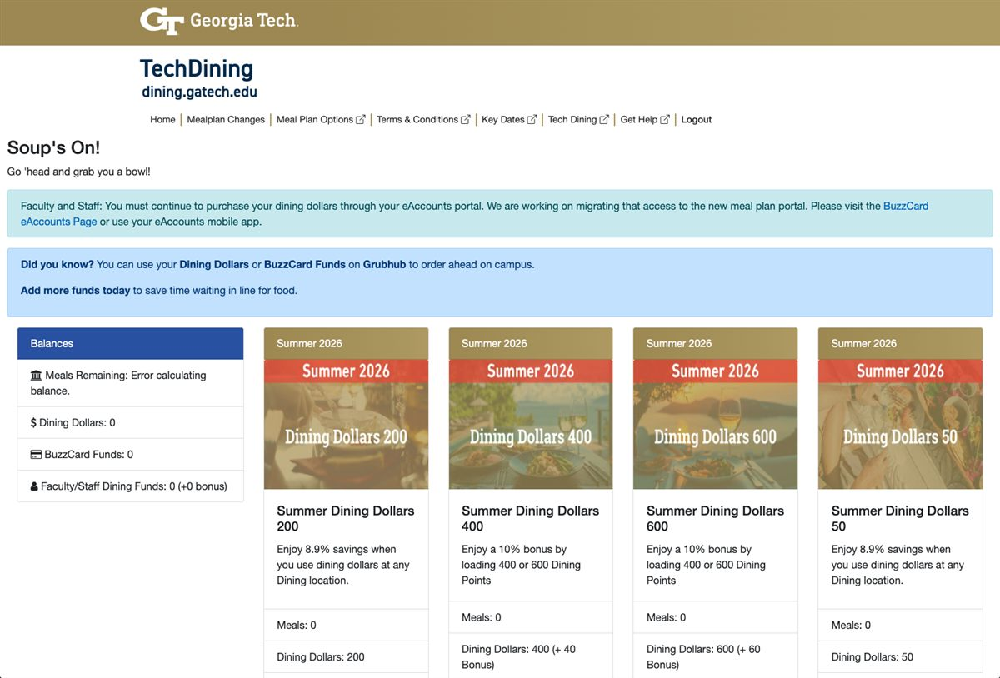
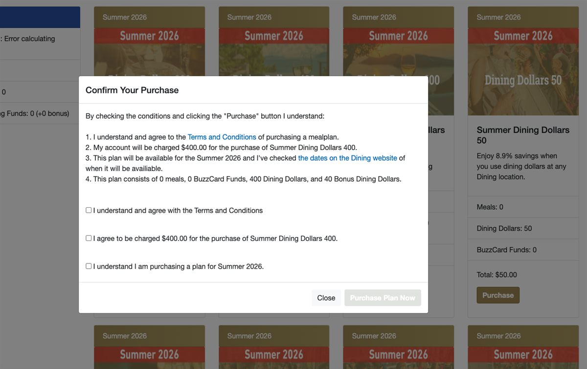
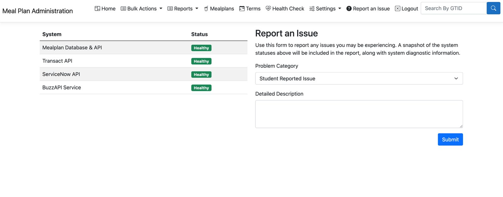

Case study / 01
Making meal-plan purchases self-service, safe, and reliable.
10,000 students per semester. More than $100 million in transactions. A student-facing experience built to work when upstream systems did not.
The Georgia Tech Meal Plan Platform replaced an error-prone process of forms, email requests, spreadsheets, and batch uploads with a self-service system for students and a practical operations workspace for Dining Services.

The problem
External systems could be slow, unavailable, or only partly successful.
A student’s request ultimately had to affect both Banner, Georgia Tech’s financial system, and Transact, the card-account system. Completing that work during a web request would have made the student experience slow and fragile—especially at peak demand.
My work spanned the user experience, ASP.NET MVC controllers and business logic, integrations with Banner and Transact, the asynchronous processing architecture, and production support after launch.
The engineering decision
Separate the experience from the transaction pipeline.
Rather than wait for every external system to complete, the application recorded the request and published a message to Azure Service Bus. A background service processed the queued work, applied the financial transaction, updated the student’s card account, and retained a clear history for troubleshooting or replay.
- Fast, responsive student interactions even when dependent systems were slow
- Reliable retry behavior for failed messages
- Compensating operations when one external operation succeeded and another did not
- Transaction history and controlled reprocessing for support teams
A purchase was treated as one logical transaction—even though it crossed multiple systems.

Making financial actions explicit
Good UX did not mean hiding the commitment.
Students could complete the flow independently, but the experience made the purchase terms, price, availability period, and plan contents explicit before a transaction entered the processing pipeline. This was especially important for a system that handled real financial activity and account changes.

Operations and support
Production readiness includes seeing what the system is doing.
After launch, I expanded observability by integrating logs with Sumo Logic and creating automated alerts that notified the team through Microsoft Teams when error activity increased. The administrative side also helped staff review sales, resolve exceptions, and requeue individual work through the same controlled processing path.
The work reinforced a lesson I carry into every system: correct business logic is necessary, but operations teams also need clear signals and a way to act when something goes wrong.

Impact
A durable platform for students and staff.
- Served approximately 10,000 students each semester
- Processed more than $100 million in financial transactions
- Reduced processing from days or weeks to typically under 30 seconds
- Operated in production for roughly eight years
- Shifted staff effort from manually processing every request to resolving exceptions